01 / PRODUCT DESIGN
Explore the process
01 / PRODUCT DESIGN
Explore the process
Dooti
A cleaner way to collect, seal and carry. From user research to an integrated product system.
Designforpeople.
PORTFOLIO / DESIGN ENGINEERING
Product Design Engineer
I combine design engineering and product management to create meaningful, human-centred products. I turn user needs into practical solutions, with a focus on long-term value.
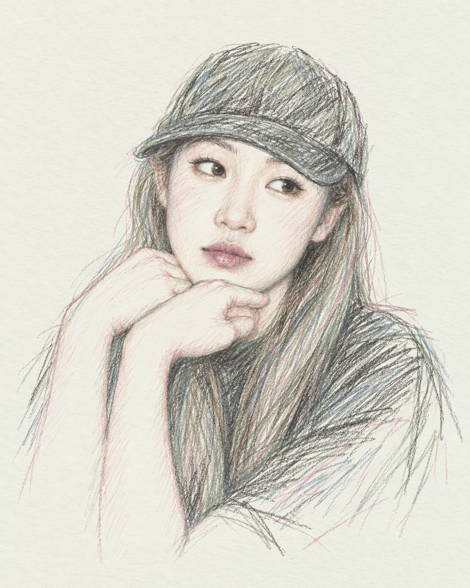
Zhixuan Song (Cici)
2nd year · MEng Design Engineering
Imperial College London
Dyson School of Design Engineering
London, UK / Shanghai, China
+44 7880 799023 +86 180 6859 4661Human-centred UI/UX, industrial and sustainable design, design for manufacturing and disassembly, and visual communication.
CAD, simulation and rendering, rapid prototyping, embedded electronics, programming, machine learning and data science.
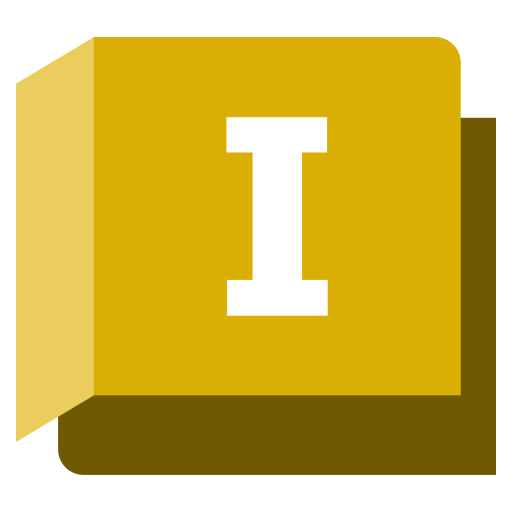
InventorCAD / renderingIDEAS / OBJECTS / EXPERIENCES
Every idea starts with a question.
A space to explore what comes next.10 case studies · Ten design journeys
01 / PRODUCT DESIGN
Explore the process
A cleaner way to collect, seal and carry. From user research to an integrated product system.
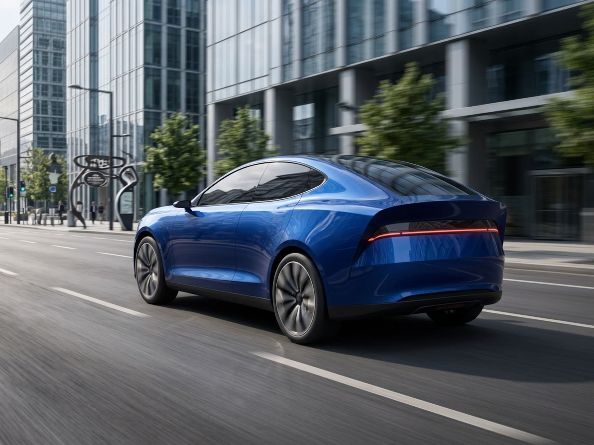
02 / AERODYNAMIC DESIGN Explore the processShaped by airflow. From aerodynamic constraints to an integrated SUV concept, tested through CFD.
 03 / SUSTAINABLE PRODUCT DESIGNExplore the process
03 / SUSTAINABLE PRODUCT DESIGNExplore the process Designed for the journey and beyond. A modular aircraft seat for comfort, repair and material recovery.
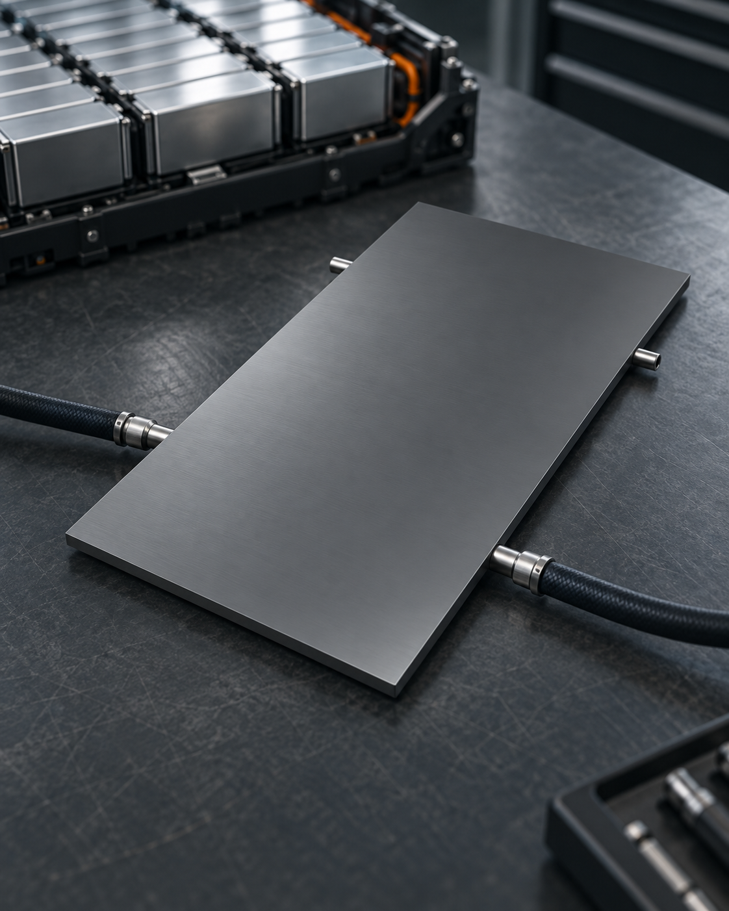
04 / THERMAL MANAGEMENT Explore the processCooling by design. A battery cold plate exploring the balance between heat removal, temperature variation and pressure loss.
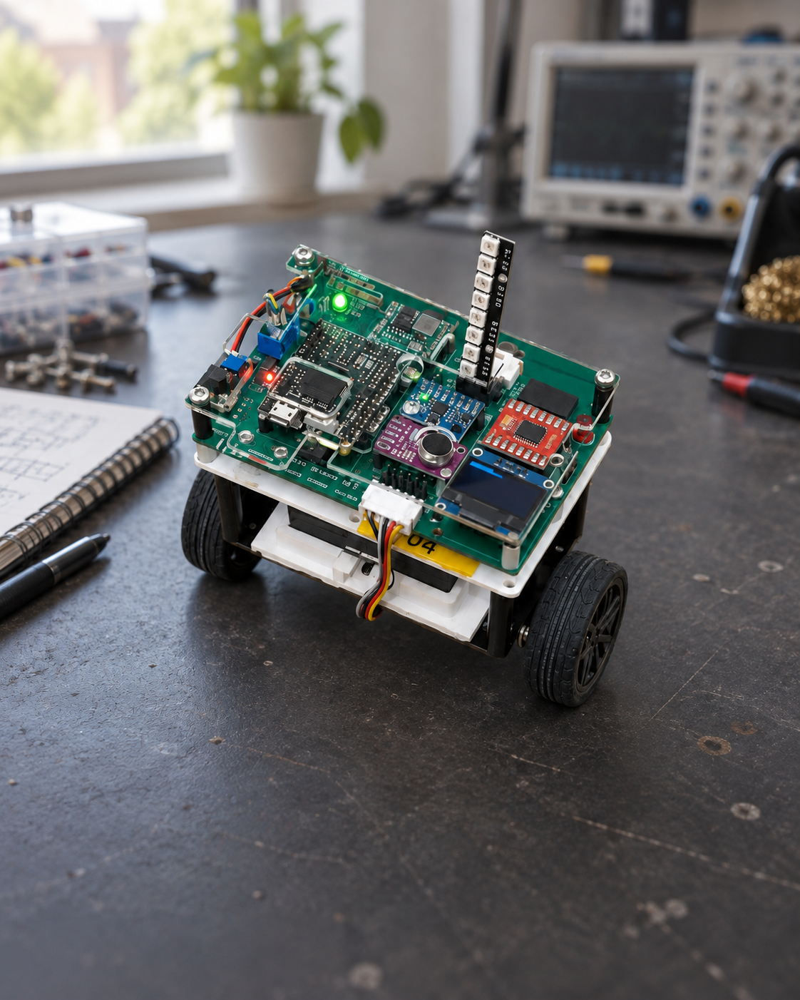
05 / PHYSICAL COMPUTINGExplore the processOne beat. One step. A programmable two-wheel robot connecting live audio, movement and continuous balance control.
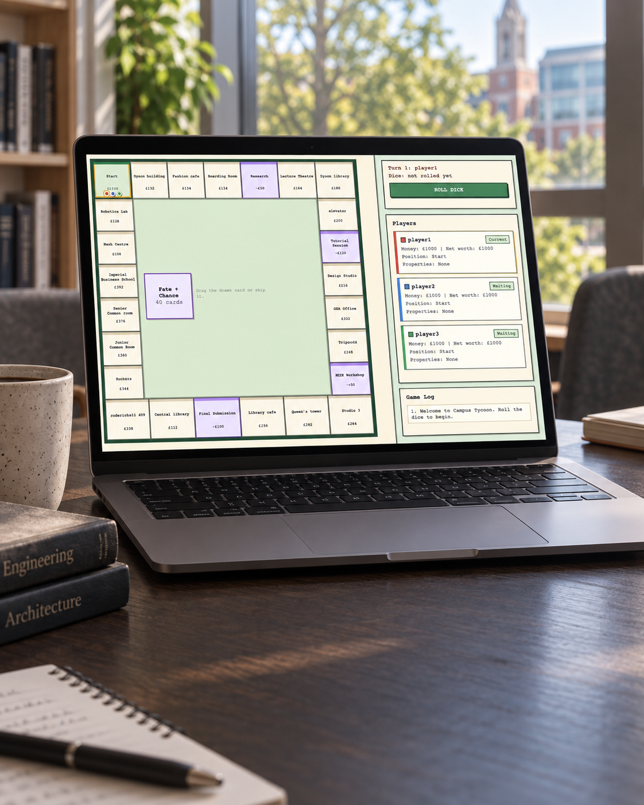
06 / COMPUTINGExplore the processA familiar board, a campus of possibilities. A playable browser game with explicit turn states, visible feedback and tested rules.
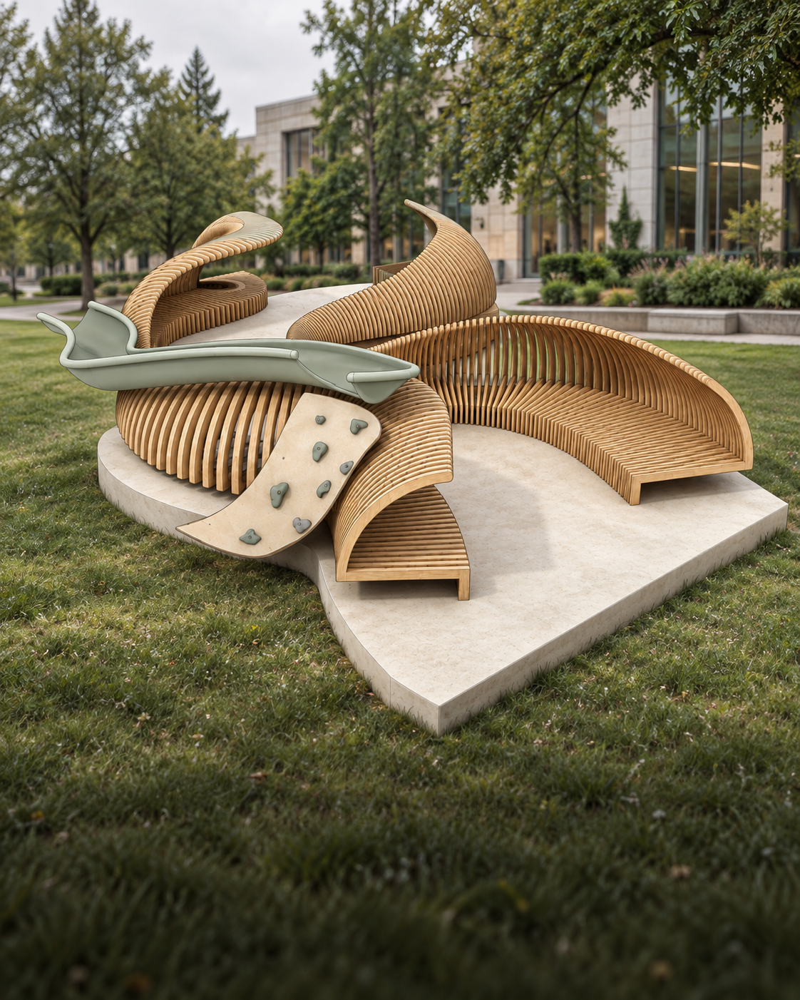
07 / HUMAN-CENTRED DESIGNExplore the processA reason to stay. Reimagining Queen’s Lawn through field research, modular seating and shared campus spaces.
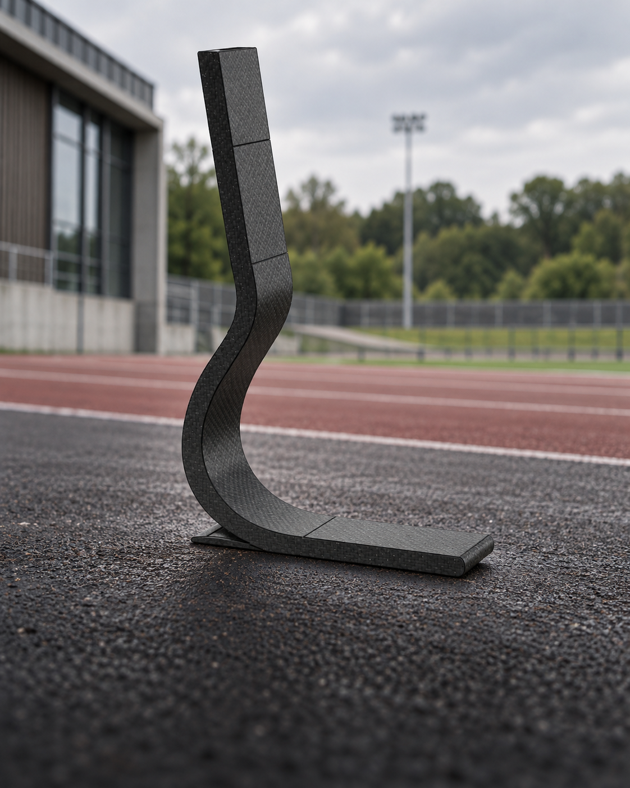
Explore the processRefining the curve. A prosthetic blade study connecting material choice, geometry and simulation evidence.
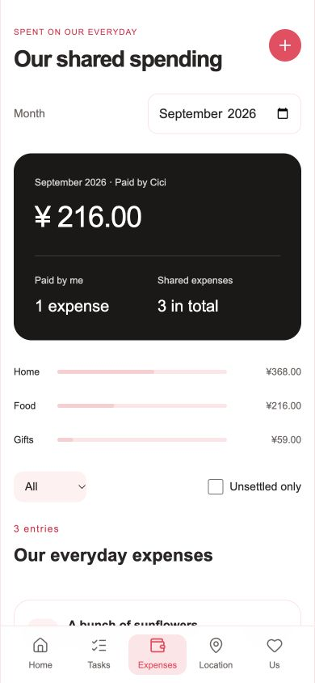
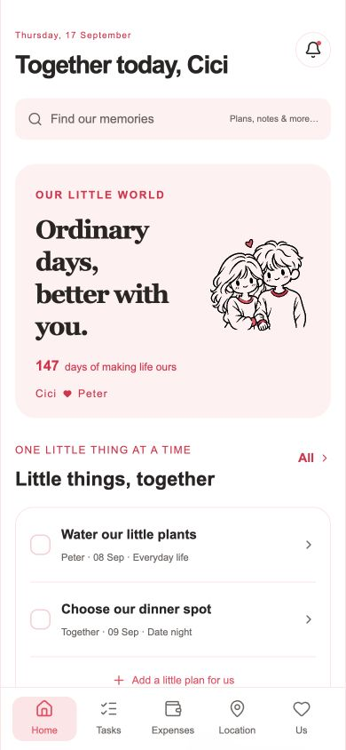
Explore the experienceA little more us. A shared space for everyday plans, spending, wishes and thoughtful communication.
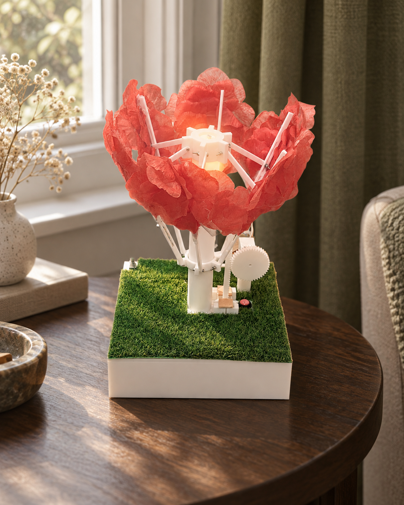
Make it bloomA flower that responds. Bringing light sensing, a shared mechanism and a playful gesture into one physical prototype.
WORK EXPERIENCE
Learning through product design, research and hands-on collaboration.
INTERNSHIP
Marketing Intern Automation Solutions Division
Product styling, software UI and product visualisation.
Developed exterior styling and colour schemes for bulk weighing scales.
Designed the system’s UI, refining interaction logic and information hierarchy to help customers find key information quickly. Simplified layouts for a cleaner, more cohesive visual experience.
Created rendered product images for marketing in Autodesk Inventor, including minor component edits, colour application and assembly.
Sales & marketing support Compiled records of products sold and organised sales revenue data. Created PowerPoint presentations introducing the products.
INTERNSHIP
Intern
AI-assisted R&D and quality control for refractory materials.
Proposed an AI-assisted R&D approach based on the company’s experimental workflow, using machine learning with the aim of improving experimental efficiency. Developed the model code and presented the work.
Used laboratory instruments for quality control of refractory materials, organised experimental data and prepared experimental reports.
Additional contribution Helped refine the company’s PowerPoint templates.